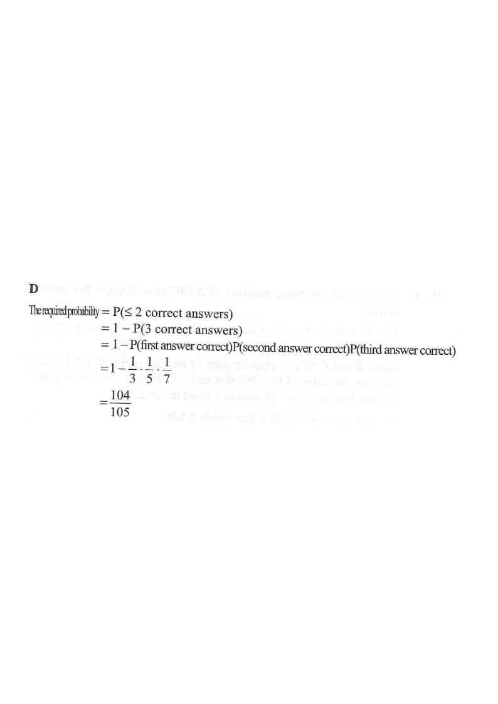

There are three questions in a mathematics competition. The probabilities that Susan answers the
first question correctly, the second question correctly and the third question correctly are
$\dfrac{1}{3}$, $\dfrac{1}{5}$ and $\dfrac{1}{7}$ respectively. The probability that Susan answers
at most $2$ questions correctly in the competition is
A. $\dfrac{1}{105}$. B. $\dfrac{13}{105}$. C. $\dfrac{92}{105}$. D. $\dfrac{104}{105}$.

Figure (original exam diagram)
1 Read off the given probabilities
Let $C_1, C_2, C_3$ be the events that Susan answers question 1, 2, 3 correctly. Then
$$P(C_1)=\tfrac13,\qquad P(C_2)=\tfrac15,\qquad P(C_3)=\tfrac17 .$$
Hint: The three answers are independent — so we can multiply probabilities along a branch.
2 "At most 2 correct" = the complement of "all 3 correct"
Complement Rule\(P(A^{\prime})=1-P(A)\)The complement of "at most 2 correct" is the single case "all 3 correct".
The only way to not satisfy "at most 2 correct" is to get all 3 correct. So
$$P(\text{at most 2 correct})=1-P(\text{all 3 correct}).$$
Hint: Using the complement avoids adding up the many mixed cases (2 correct, 1 correct, 0 correct).
3 Compute $P(\text{all 3 correct})$
Multiplication Law of Independent Events\(P(A\cap B\cap C)=P(A)P(B)P(C)\)The three answers are independent, so the branch probability is \(\dfrac13\times\dfrac15\times\dfrac17\).
Hint: Multiply along the "correct–correct–correct" branch of the tree diagram.
4 Subtract from 1
$$\begin{aligned}P(\text{at most 2 correct})&=1-\frac{1}{105}\\&=\frac{105-1}{105}=\frac{104}{105}.\end{aligned}$$
Hint: Write $1=\dfrac{105}{105}$ to subtract the fractions.
Answer: D $\dfrac{104}{105}$
PRACTICESimilar question — try it yourself
Question. There are three questions in a quiz. The probabilities that Susan answers the first, second and third questions correctly are \(\dfrac{1}{4}\), \(\dfrac{1}{6}\) and \(\dfrac{1}{8}\) respectively. Find the probability that she answers at most 2 questions correctly.
Show the worked solution
Step 1. Let \(C_{1},C_{2},C_{3}\) be the events of answering each question correctly; they are independent.